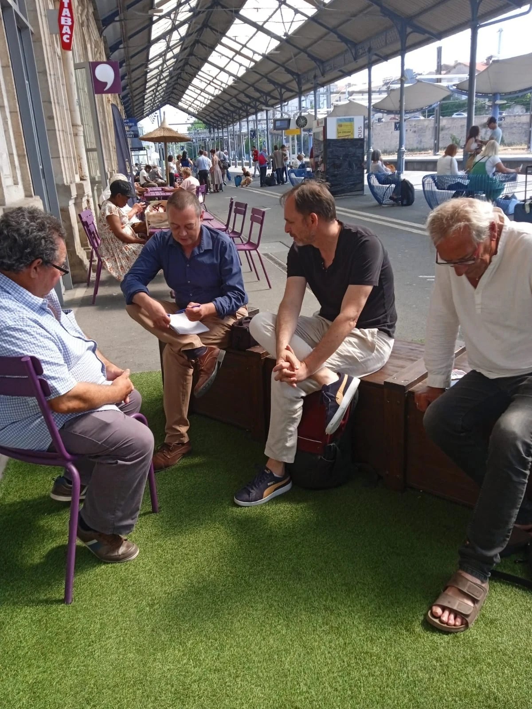

Compte rendu fédéral
À Niort, nous défendons les TER comme service public
Date indiquée par Facebook · 9 juin 2023
Repères éditoriaux
Nous avons débattu de l’avenir des TER en Poitou-Charentes le 7 juin à Niort avec Frédéric Mellier, élu régional communiste. La discussion a porté sur les conséquences de l’ouverture des lignes à des opérateurs privés.
Texte conservé avec la publication
Le PCF contre l'ouverture des lignes TER aux opérateurs privés en région Nouvelle-Aquitaine
La Fédération du PCF des Deux-Sèvres avait invité l'élu régional communiste Frédéric Mellier à venir débattre mercredi 7 juin sur l'avenir des TER en Poitou-Charentes. Un débat riche s'est tenu sur les conséquences qu'entrainerait une ouverture aux opérateurs privés des lignes TER. Suppression de lignes considérées comme non rentables, sécurité moindre, suppression d'emplois avec de plus en plus de fermetures de guichets etc. Au final, moins de service public, c'est moins de service aux usagers. On a pu en mesurer les conséquences avec France-Télécom, EDF-GDF, dans le domaine de la Santé, avec les autoroutes etc. Le jeudi 8 juin, le PCF 79 tenait une conférence de presse sur le quai de la gare de Niort par rapport à la future convention qui sera votée à la région.
La compétence de la gestion des TER n'étant pas nationale mais régionale, l'assemblée régionale de Nouvelle-Aquitaine est appelée à voter lundi 12 juin sur le renouvellement de la convention entre la région et la SNCF. Elle sera soumise au vote et prévoit notamment cette ouverture à la concurrence. La région Nouvelle-Aquitaine serait découpée en 4 lots, le 1er soumis nous concerne puisque c'est l'ex Poitou-Charentes.
On sait bien que le privé délaissera les lignes qui ne sont pas rentables. Il s'accapare ce qui rapporte et délaisse ce qui coûte. La SNCF avait justement été créée pour mutualiser les coûts et répondre aux besoins de la population. Il faudrait des réouvertures de lignes ; même une ligne comme Niort-Saintes pourrait être remise en cause … Notre département a intérêt à ce que cette ouverture à la concurrence ne se fasse pas. Il est indispensable d'apporter des améliorations au fonctionnement actuel, mais dans le cadre d'un serice public. Sur le budget consacré aux mobilités, la région se situe en dernière position au niveau national. Pourtant, ne perdons pas de vue que chaque euro mis dans le transport ferroviaire, c'est un euro pour la transition écologique.
Le 12 juin, les élus communistes à la région voteront contre cette ouverture au privé. Il en sera de même pour les écologistes. Des départements comme la Corréze (majorité de droite) ou de Gironde (de gauche) ont adopté une motion hostile à cette ouverture au privé.
Quoi qu'il en soit, même si le vote contre ce projet était minoritaire le 12 juin, la bataille ne serait pas terminée: il restera trois ans avant l'application du décret. Il faudra rassembler toutes les forces politiques, syndicales, associations d'usagers pour empêcher une casse de plus dans notre service public.

Sources
Archive rouge · export Facebook · AR-0002-FB-01632
À lire aussi · À Niort, débat du 7 juin sur l’avenir des TER en Poitou-Charentes